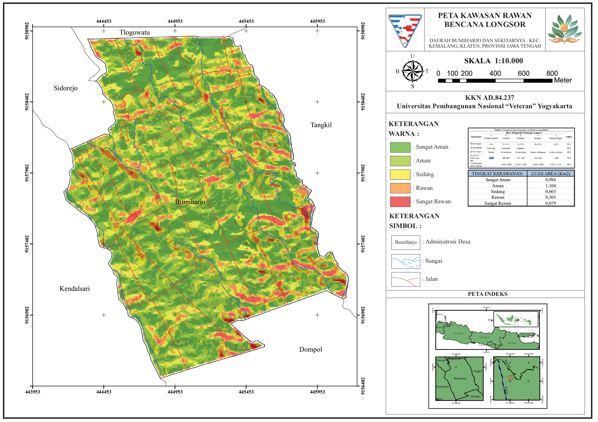

Informasi spasial dan pemetaan Desa Bumiharjo
Lokasi Desa Bumiharjo pada Google Maps
Menampilkan batas wilayah administratif Desa
Hasil pemetaan administrasi wilayah akan ditampilkan pada bagian ini.
Informasi wilayah yang memiliki potensi risiko bencana

Pemetaan tingkat kerawanan bencana longsor di kawasan Desa Bumiharjo dan sekitarnya.
Berbatasan Dengan Desa Tlogowatu dan Sidorejo
Berbatasan Dengan Desa Dompol
Berbatasan Dengan Desa Tangkil
Berbatasan Dengan Desa Kendalsari